Lo que harás

En este proyecto, crearás una escena espacial con personajes 👾 que se ‘emocionan’ para compartir sus pensamientos o sentimientos.
En Scratch, los personajes y cosas se llaman objetos y aparecen en el Escenario.
Vas a:
- Agregar objetos y un fondo para configurar tu proyecto
- Hacer que los objetos se comuniquen al hacer clic en ellos usando bloques de Apariencia y Sonido
- Usar el editor de dibujo para cambiar un disfraz
ReproducirHaz clic en cada objeto para ver qué hace cada uno. ¿Qué sucede si haces clic en un objeto y luego rápidamente haces clic en otro objeto? |
1. Crea tu escena
Comienza tu proyecto
| Crea un proyecto nuevo en Scratch. Puedes usar directamente este enlace y Scratch se abrirá en otra pestaña del navegador. |
A continuación, vas a aprender a hacer una serie de cosas básicas en cualquier proyecto de Scratch. Pulsa sobre los personajes, ¡ellos te irán guiando paso a paso!
Guarda tu trabajo
Tu proyecto aún no tiene un nombre útil, sino que se llama "Untitled".
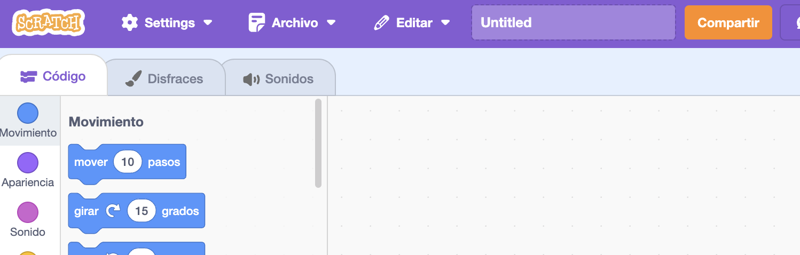
Vas a cambiarle el nombre para que se llame "Conversación espacial". El nombre lo cambias escribiendo directamente en el recuadro.
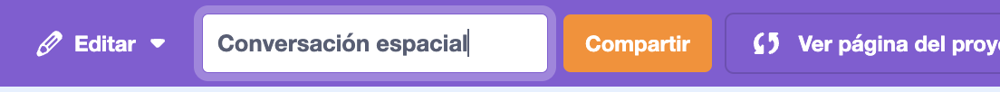
Cada vez que modifiques algo y quieras asegurarte de que los cambios quedan guardados, puedes usar el menú Archivo/Guardar ahora. Si se te olvida, no te preocupes porque Scratch guarda el trabajo por ti cada poco tiempo.
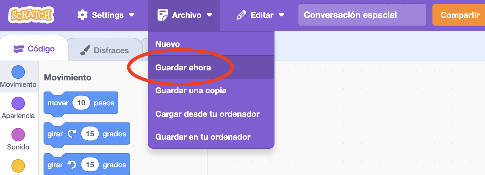
Inicia Sesión
El proyecto se abre en una ventana del editor de Scratch. Pulsa en Iniciar Sesión.
En el campo Nombre de Usuario tienes que poner tu usuario de EducaAnd, pero sin la parte de "@g.educaand.es" que escribes cuando accedes a Google Classroom.
En el campo Contraseña tienes que poner una contraseña especial, que no es la que usas siempre para EducaAnd. Esta contraseña especial es de nuevo tu nombre de usuario de EducaAnd, pero esta vez escribiendo delante una letra p minúscula.
La contraseña la podrás cambiar más adelante, por si quieres poner la misma de EducaAnd.
El editor de Scratch
El proyecto se abre en una ventana del editor de Scratch, que tiene este aspecto (haz clic en la imagen si quieres verla con más detalle):

Agrega un fondo
El Escenario es donde se ejecuta tu proyecto. Un fondo cambia la apariencia del escenario.
Haz clic en Elige un fondo en el panel del Escenario con este botón: 
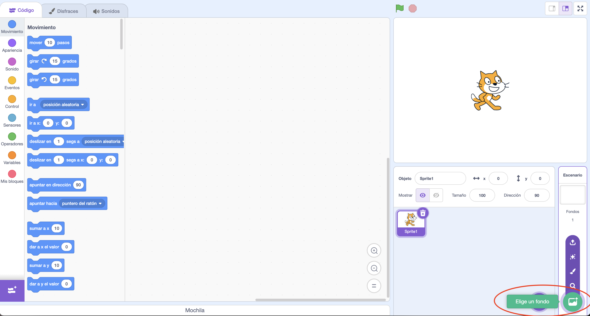
Haz clic en la categoría Espacio para filtrar y encontrar sólo los fondos relacionados con el espacio:
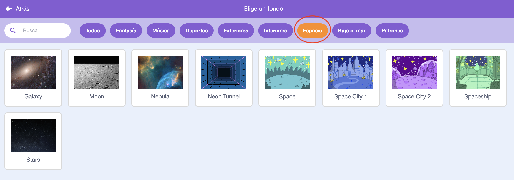
Selecciona el fondo que más te guste. En los ejemplos hemos seleccionado el fondo "Space", pero tú puedes elegir cualquier otro que te guste. Cuando lo selecciones, en la parte superior izquierda del editor verás cómo queda tu nuevo fondo.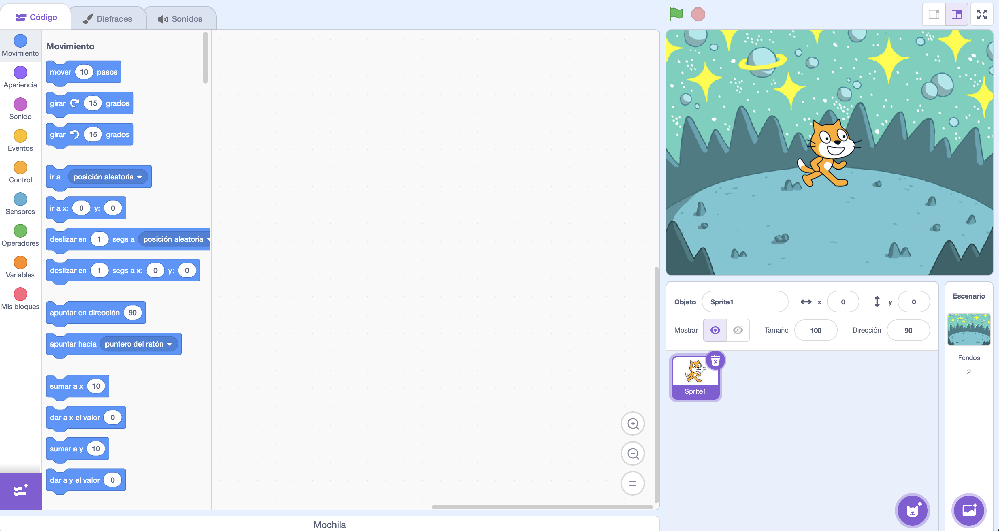
Añade un objeto
¿Puedes ver el objeto que ya está incluido en tu proyecto? Ese es el gato Scratch y siempre aparece cuando creamos un proyecto nuevo. Como no lo necesitamos, vamos a eliminarlo (no te preocupes, sólo va a irse a un lugar mejor)
Para eliminar el Sprite1 (así se llama el gato Scratch al empezar) sólo tienes que hacer clic en el icono con forma de cubo de basura que tiene en su esquina:
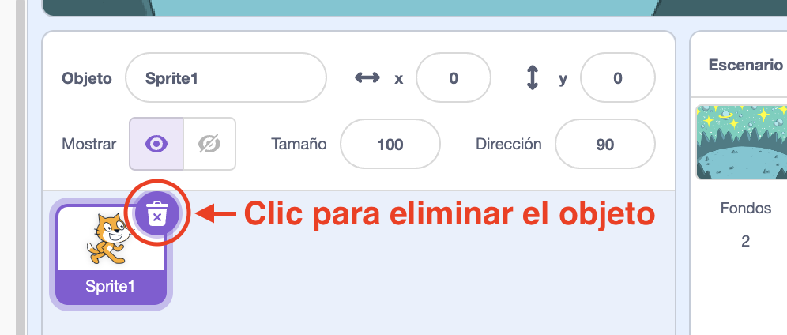
A continuación, añadiremos un nuevo objeto utilizando el botón Elige un objeto: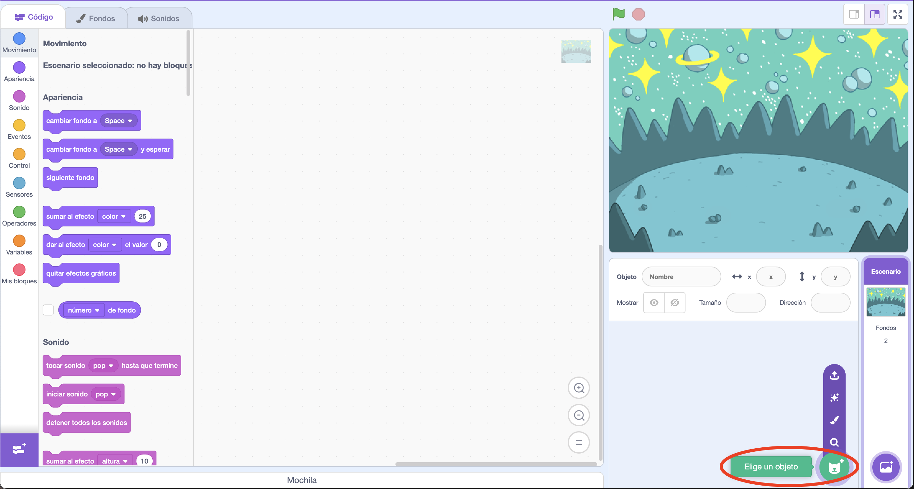
Selecciona la categoría Fantasía. Haz clic en el objeto Pico para agregarlo a tu proyecto.
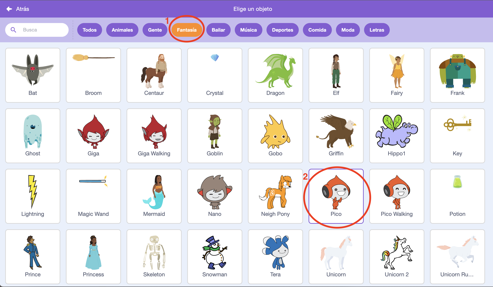
Arrastra el objeto Pico para colocarlo en el lado izquierdo del escenario. Tu escenario debería verse más o menos así:
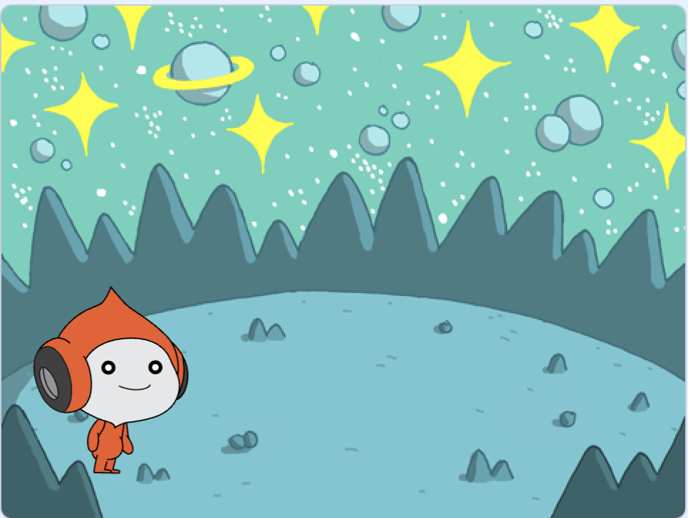
2. Pico dice hola
Un objeto puede tener código, disfraces y sonidos para cambiar su apariencia y lo que hace.
Agrega bloques de código para hacer que Pico reaccione con palabras y sonido cuando se haga clic en él.
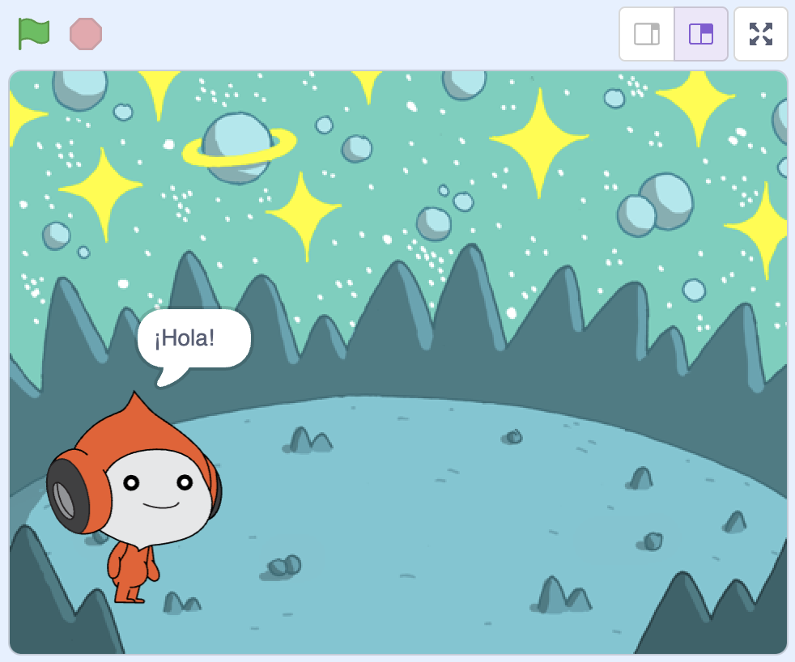
Usa el bloque de Decir
Abre el menú de bloques Apariencia.
Haz clic en el bloque decir ¡Hola! durante 2 segundos.
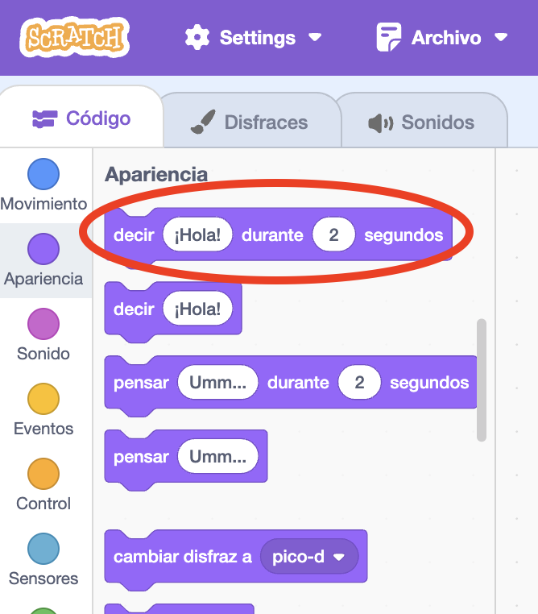
El objeto Pico mostrará una burbuja de diálogo durante dos segundos.
Consejo: Los bloques de código en Scratch se iluminan con un contorno amarillo cuando se están ejecutando.
Arrastra el bloque decir ¡Hola! durante 2 segundos al área de código, para que quede "dentro" de Pico.

Haz que Pico hable cuando hagas clic en él
Ahora vas a usar un bloque de evento, para que Pico hable cuando ocurra "algo". En este caso ese "algo" es que hagamos clic en él.
Selecciona la categoría Eventos y arrastra el bloque al hacer clic en este objeto al área de código. Conecta este bloque con el bloque decir que ya tenías añadido de antes.

Haz clic en el objeto Pico en el escenario y verifica que la burbuja de diálogo aparezca durante dos segundos. Es importante probar tu código para asegurarte de que hace lo que esperas.
3. Pico reproduce un sonido
Otra forma de comunicarse es mediante sonidos. Para hacer los ejercicios de esta actividad, necesitarás conectar unos auriculares al ordenador para poder escuchar los sonidos (salvo que tu aula tenga altavoces en los ordenadores).
También puedes hacer esta parte del proyecto en casa con un ordenador que tenga altavoces, o incluso con un móvil o tablet.
Añade un sonido al objeto Pico
Haz clic en la pestaña Sonidos para el objeto Pico y encontrarás el sonido pop. Haz clic en el triangulo Reproducir para escuchar el sonido pop.
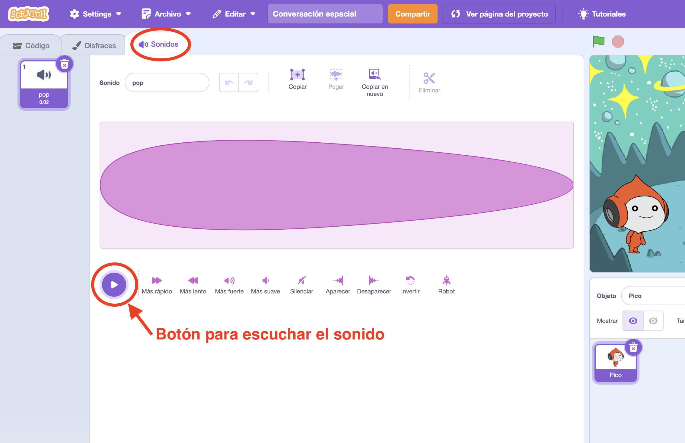
Como queremos añadir un sonido nuevo, haz clic en el ícono Elige un sonido y selecciona la categoría Espacio.
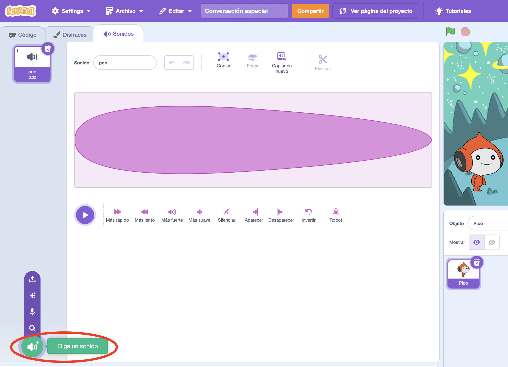
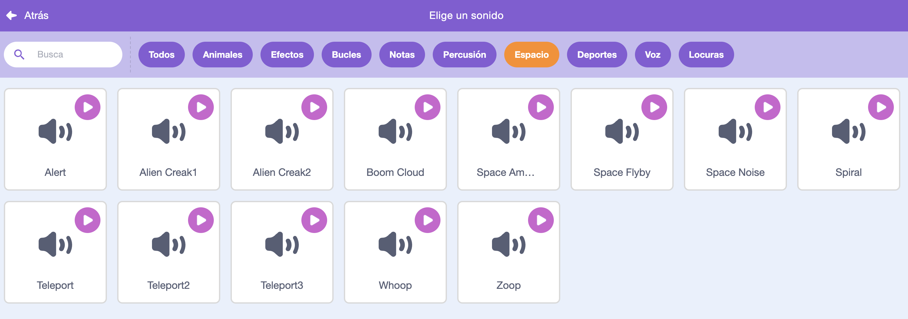
Utiliza los botones triangulares para escuchar los diferentes sonidos. Sólo con colocar el puntero del ratón sobre cada botón triangular, ya se reproduce el sonido de muestra. No hace falta pulsar en ellos. Cuando encuentres uno que te guste, haz clic sobre su icono de altavoz para añadírselo a Pico.
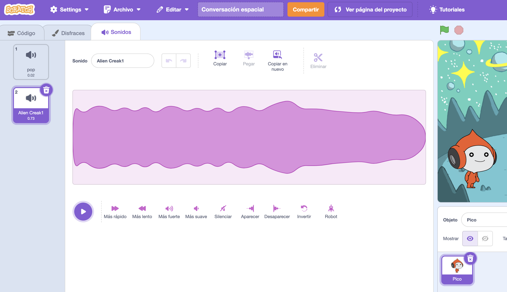
Haz que el sonido se reproduzca al hacer clic
Después de haber aprendido a que Pico hable cuando hagamos clic en él, seguro que ya te imaginas cómo puedes conseguir que también haga un solido cuando lo cliques. En efecto, tendrás que usar un bloque de código enganchado en el evento al hacer clic en este objeto.
Vuelve al área de código haciendo clic en la pestaña Código. Selecciona la categoría Sonidos y arrastra el bloque iniciar sonido hasta engancharlo en el evento al hacer clic en este objeto, justo antes del bloque decir.

Comprueba que en el bloque iniciar sonido aparezca el sonido que has elegido antes. Si no es así, puedes desplegar un menú pulsando en el botón triangular del bloque para seleccionarlo tú mismo.
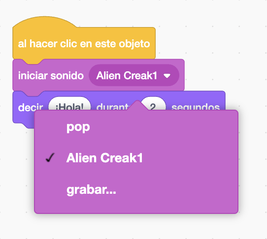
Prueba: haz clic en el objeto Pico y verifica que la burbuja de dialogo aparece y que puedes escuchar el sonido. Si no escuchas el sonido, asegúrate de haber agregado el bloque iniciar sonido debajo del bloque al hacer clic en este objeto.4. Nano cambia de disfraz
Vamos a traerle un compañero a Pico. En este caso se trata de Nano, un personaje que puedes encontrar en la categoría Fantasía. Recuerda lo que hiciste al añadir a Pico y repite los pasos pero añadiendo ahora a Nano.
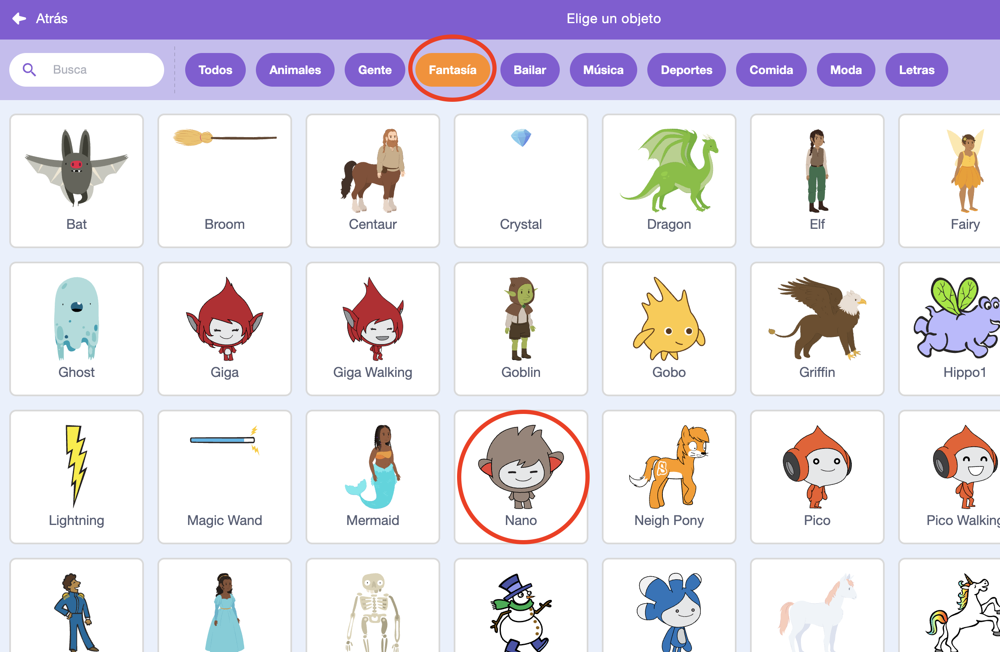
Vamos a hacer que Nano se emocione cambiando sus disfraces. Los objetos en Scratch tienen disfraces para cambiar su apariencia. ¡Cambiando sus disfraces, hasta puedes animar un objeto!
Nano se anima
Asegúrate de que el objeto Nano esté seleccionado en la lista de objetos debajo del escenario.
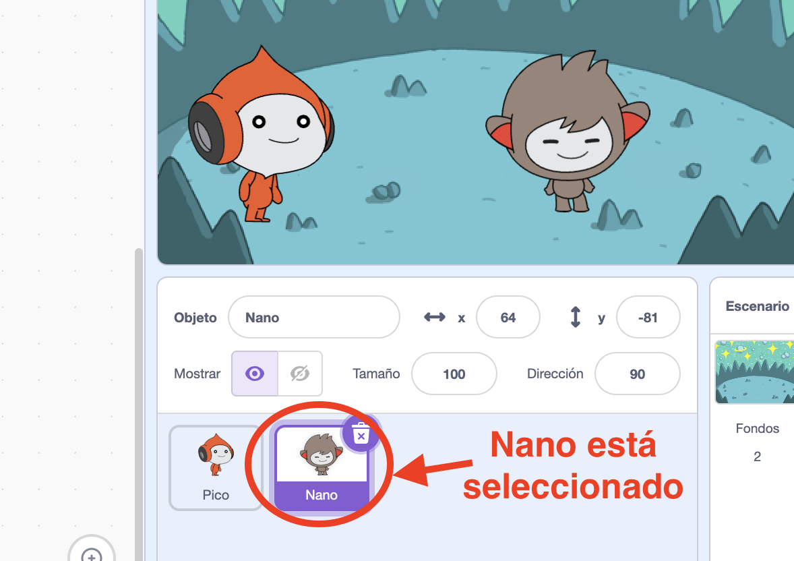
Ahora vas a arrastrar los bloques necesarios para que Nano se comunique cambiando su apariencia. Vamos a simular que Nano abre la boca y después la cierra. Para ello vas a usar el bloque cambiar disfraz a, que está en la categoría Apariencia.
Ya sabes cómo usar el evento al hacer clic en este objeto para que todo ocurra cuando hagamos clic en Nano.
Para que nos dé tiempo de ver cómo Nano abre y cierra la boca, tenemos que incluir una pequeña espera entre cada cambio de disfraz. Usarás el bloque esperar 1 segundos, que está en la categoría Control. Un segundo es mucho tiempo, así que lo cambiaremos a un valor menor, por ejemplo, 0.5 segundos. Atención: en Scratch tienes que usar el punto (.) para separar los decimales, no te sirve la coma (,).
Tu código debería quedar así:
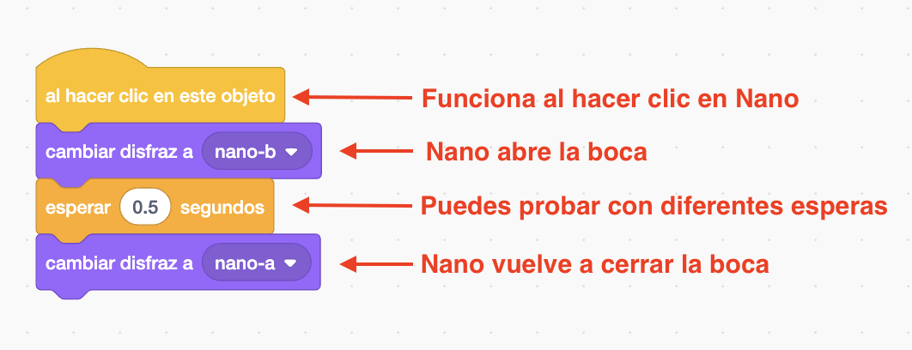
Prueba: haz clic en el objeto Nano en el escenario y verifica que Nano cambie su disfraz.Nano usa lengua de signos
Millones de personas utilizan la lengua de signos para comunicarse. Para decir ‘Gracias’ en lengua de signos española (LSE) se colocan los dedos en la barbilla con la mano lo más plana posible. Luego se mueve la mano hacia adelante, alejándola de la barbilla y ligeramente hacia abajo. Se puede hacer con una mano o con dos.
Puedes ver un ejemplo en este vídeo:
Nano se comunica en lengua de signos. Vamos a hacer que diga "Gracias" en lengua de signos.
Para ver los disfraces de Nano, haz clic en la pestaña Disfraces.
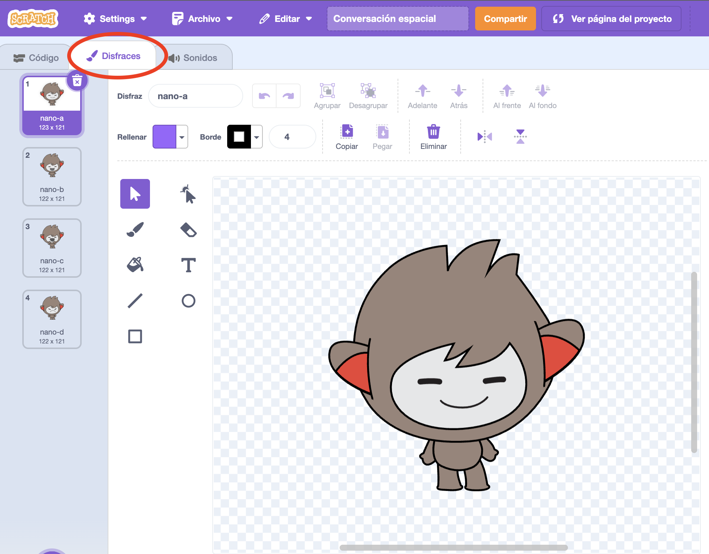
Si te fijas, Nano trae cuatro disfraces, pero ninguno nos sirve directamente para que haga esta señal. Tendremos que modificar alguno. Puedes editar los disfraces para tus objetos con el editor de dibujo. Editarás un disfraz de Nano para que diga ‘gracias’. En concreto, vas a modificar el disfraz "nano-b".
Lo primero será quitar el brazo que trae ese disfraz. Haz clic en el disfraz nano-b (1). Haz clic en el brazo del lado izquierdo (2) y luego haz clic en Eliminar (3).
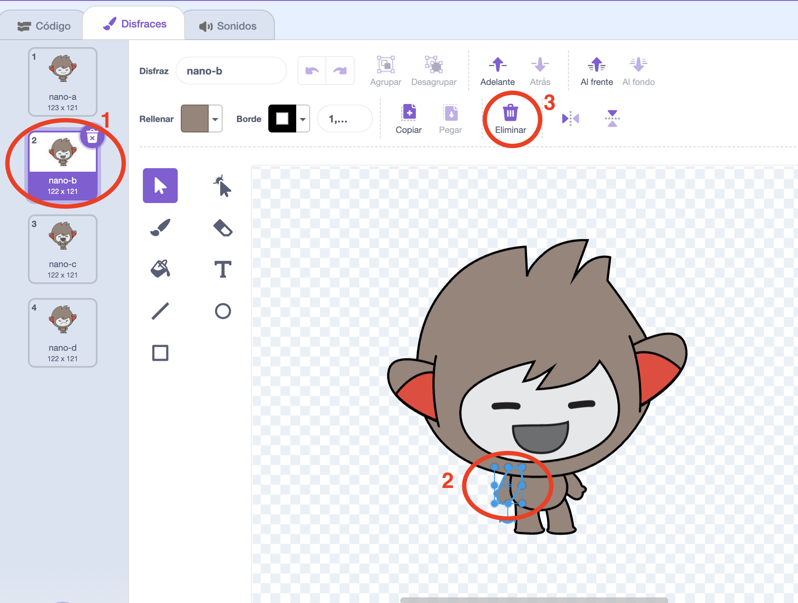
Ahora vamos a colocarle otro brazo. En concreto, vamos a coger el brazo del disfraz nano-c y lo vamos a copiar en este disfraz. Selecciona el disfraz nano-c (1), selecciona el brazo del lado izquierdo (2) y haz clic en Copiar (3).
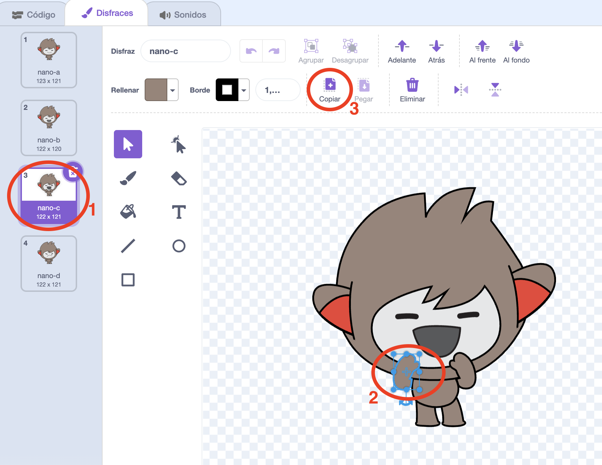
Vuelve al disfraz nano-b y haz clic en Pegar. Debería quedar así:
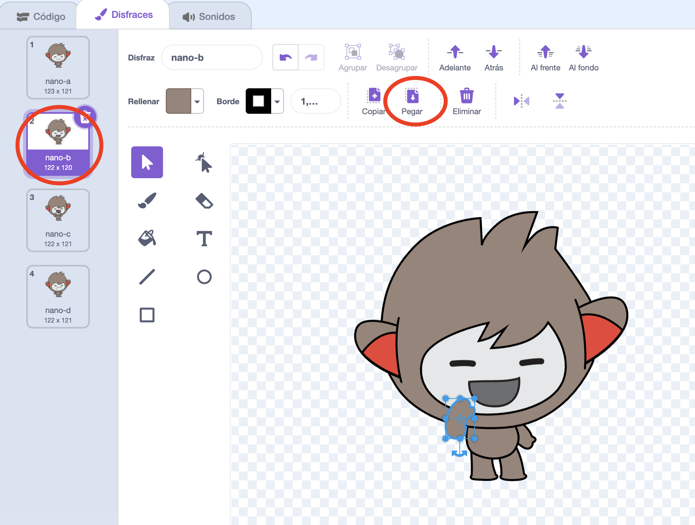
Prueba: Haz clic en el objeto Nano en el Escenario y verifica que el disfraz de Nano cambia al disfraz que has editado.
5. Giga cambia de color
Vamos a añadir a un tercer personaje. En este caso se llama Giga y puedes encontrarlo de nuevo en la categoría Fantasía.
Los objetos también pueden usar burbujas de pensamiento y cambiar sus colores para mostrar su personalidad. Vas a hacer que Giga haga eso.
Giga cambia de color
Una vez añadido el objeto Giga, colócalo a la derecha del escenario y asegúrate de que está seleccionado antes de continuar.
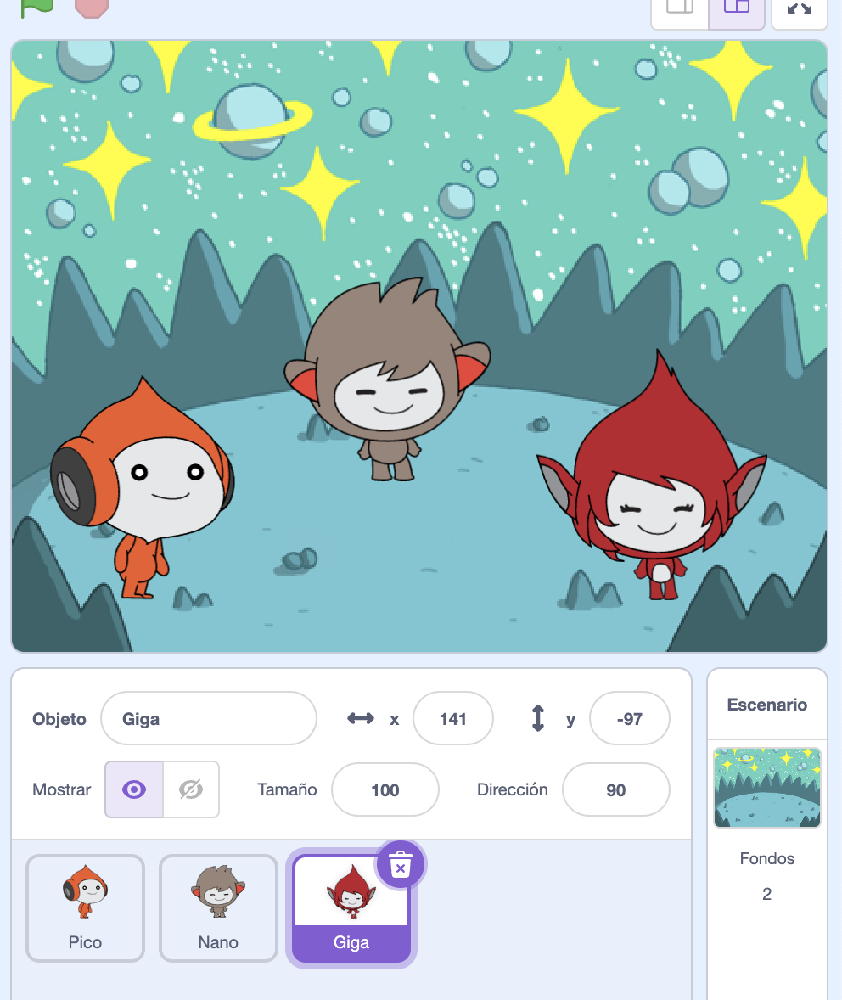
Agrega este código para que el objeto Giga se comunique cambiando de color:
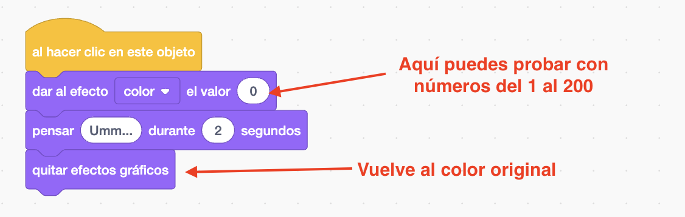
Los bloques para modificar el color están, al igual que el bloque pensar, en la categoría Apariencia.
Prueba con diferentes números del 1 al 200 en el bloque dar al efecto color el valor 0 hasta que encuentres un color que te guste. Para probar como queda cada color, solo tienes que hacer clic en Giga en el escenario.
Cambia también las palabras y el tiempo de espera en el bloque pensar. ¡Sé creativo/a!
Examen rápido
Responde las tres preguntas para ver si has superado Conversación espacial. Tienes dos vidas para superar las tres preguntas, aunque seguramente no las vas a necesitar. ¡Confío en ti!
¡Qué te diviertas!


TAREA FINAL. Mejora tu proyecto
Ahora ha llegado el momento de explorar y de usar tu creatividad. Con todo lo que has aprendido, añade un cuarto objeto Tera (lo puedes encontrar, al igual que los tres anteriores, en la categoría de Fantasía) y haz que reaccione cuando hagas clic en él.
Intenta que tera haga algo de cada cosa que has aprendido, es decir, que hable, que modifique su disfraz, que haga sonidos y que cambie de color. ¡Aprovecha, puedes hacer que Tera haga lo que te dé la gana!
Cuando hayas terminado, tienes que compartir tu proyecto y entregar su enlace en la tarea correspondiente de Google Classroom. Mira aquí abajo cómo compartir tu proyecto.
¡Comparte tu trabajo!
Para compartir cualquier proyecto de Scratch con el mundo, tienes que utilizar el botón "Compartir":
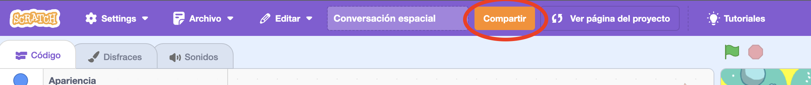
Cuando hayas hecho clic en ese botón, verás que la pantalla cambia y ahora te muestra la pantalla del proyecto:
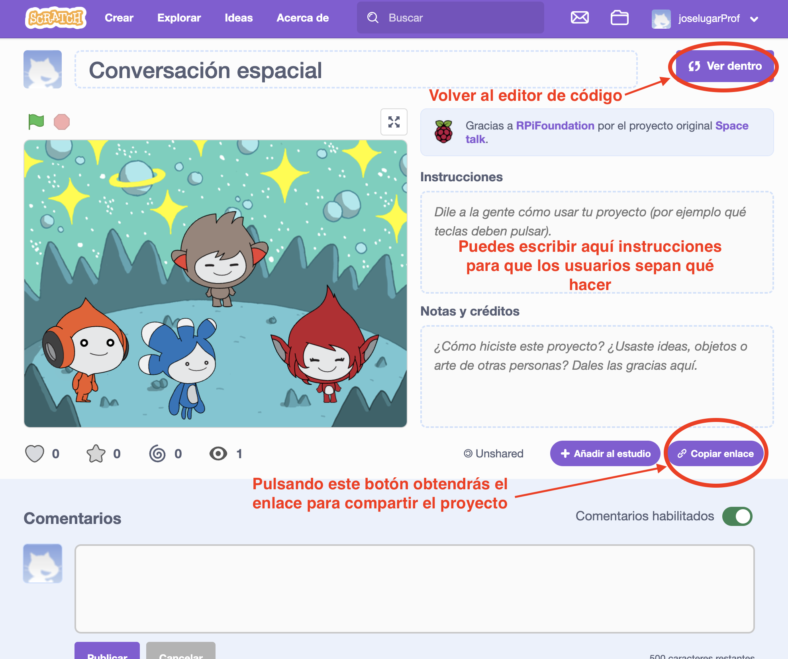
Pulsando el botón "Copiar enlace" se abre una ventana con dos opciones:
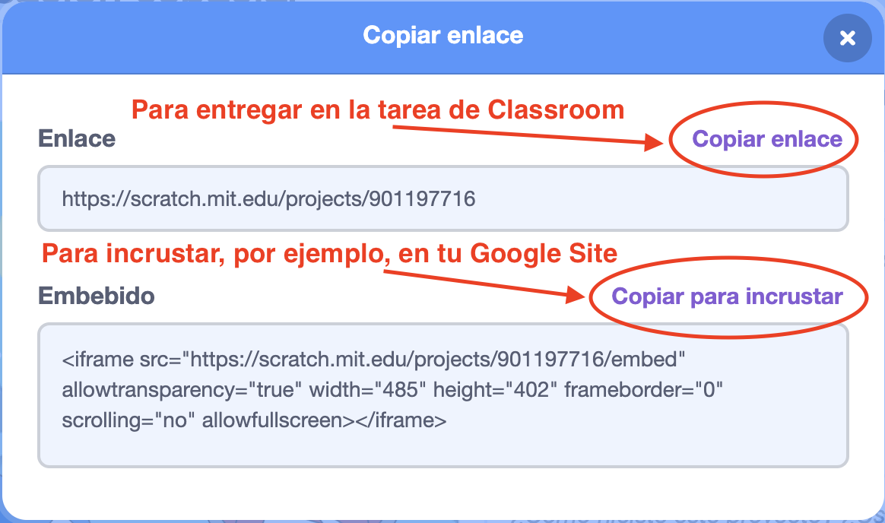
Pulsando en "Copiar enlace" copiarás directamente la URL (enlace) de tu proyecto al portapapeles del ordenador. Luego podrás pegarla en la tarea de Google Classroom.
Si pulsas donde dice "Copiar para incrustar", copiarás todo el código necesario para incrustar tu proyecto en una página web. Se mostrará directamente una ventana que permitirá jugar a tu proyecto desde cualquier sitio web. ¡Esto lo aprovecharás para ir metiendo tus proyectos en la página de proyectos de tu Google Site de Computación y Robótica!